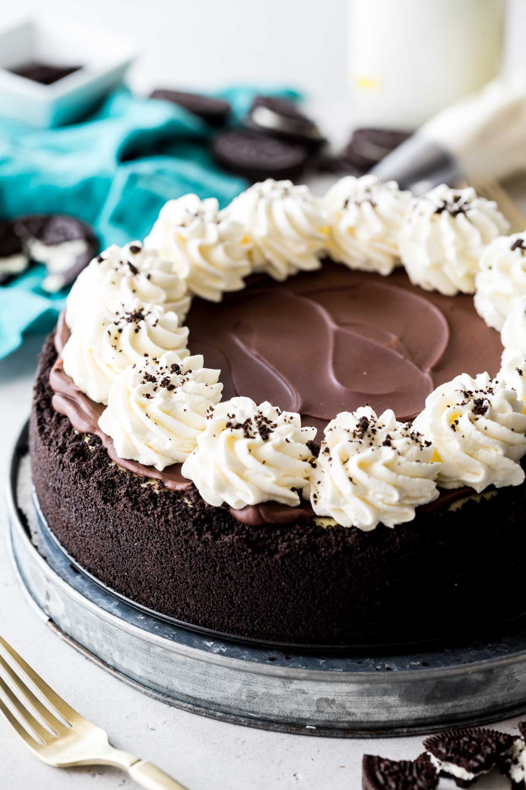

My Oreo Cheesecake uses NO fussy water bath and yields smooth,
creamy, crack-free results! It’s simple to make with an easy Oreo crust and
topped off with chocolate ganache and homemade whipped cream. This actually isn’t a new recipe, but I am making a few slight changes to the original.
We’re using a thinner ganache layer to really let the classic cheesecake flavor shine, and we’re baking it at a lower temperature.
I’m also using more Oreos in the crust to help encourage it to go even higher up the sides of the pan (this helps prevent cracks!).
For the lazy people (like myself) I'm leaving a youtube link below =)
YouTube - The PERFECT Oreo Cheesecake Recipe
| Doesn't is look delicious!!! | |
|  |
|
Which recipe would you like to see next? |